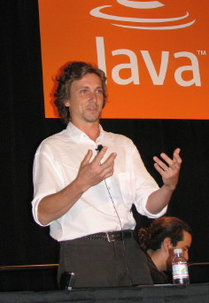

Series: Meet the Dream Team Members
(In January 2007, we announced the 11
charter members of the NetBeans
Dream
Team, a community-oriented group of highly skilled NetBeans users
devoted to promoting NetBeans and working on the NetBeans Project. In
these interviews discover who they are, why they are passionate about
NetBeans and what goals they have for the NetBeans project.)
Vinicius Senger
Dream Team member Vinicius Senger
got his start in the tech world at
the age of eight toying around with Basic and Z80 computers. By 13, he
was exploring software development and using tools such as Clipper and
Dbase.
After years of working professionally with C, C++, Perl, VB, VC++, he
discovered Java nine years ago and today is a Java Enterprise Architect
and develops web solutions. He is also the founder of Globalcode, the
largest Java Training Company in Brazil.
What was your introduction to NetBeans?
I began with NetBeans 3.x. At that time, I used the Swing Editor a lot,
but the Enterprise features were not as good as they are now today.
When NetBeans 4.0 was released I was impressed with the Enterprise
features and NetBeans became my only IDE.
How long have you been teaching Java?
For the last seven years. Most of my students are developers who are
migrating from other programming languages, such as VB, Delphi, Cobol,
and a minority are developers looking for specific training to become
Sun certified. We use NetBeans to teach user interface design and
all the amazing features centered around Web resources such as tags,
filters, listeners, etc.
What makes the NetBeans IDE an ideal tool for teaching Java?
NetBeans is the most complete IDE—it has servlets, JSP, custom Tag,
Swing, JavaME, WebServices, EJB, etc. With all these features, the
students are able to generate code using the wizard and are able to
study the generated code. This makes the Java learning curve softer.
When I began teaching EJB, we used Eclipse without plugins, and
students would take more than three hours to creat a simple EJB Hello
World. Today, the same exercise using the NetBeans IDE takes no more
than 15 minutes with the EJB wizard feature. Now students only need to
check the xml file instead of creating it themselves. They click “run”
to compile, build and deploy.
Why should new developers work with the NetBeans IDE?
Java teachers generally believe that student developers should be able
to make components with and without IDEs. Compile, build jar,
environment/classpath, deployment and debug—all these can be done with
and without the tool. It is important to teach both ways because
sometimes all you might on hand is a terminal. That said, an IDE is a
good tool, and NetBeans is perfect for students. It is customizable. It
has a simple download, the best project type abstraction, easy
debugging code, and users can discover new types of components using
the wizards. Plus, it is a beautiful example of community development.
How has NetBeans IDE 6.0 changed the way you teach?
It is the “Eclipse killer” because now we have the ability to generate
hashcode, equals, constructor and it has a powerful refactor tool. We
are very excited about NetBeans 6.0 at Globalcode, and we should finish
upgrading all our computers with this new version by the next month.
What are your students developing
with the NetBeans IDE?
They are currently using NetBeans for different things: most of them to
make Swing interface and for developing web applications. They using
different frameworks and architectures: Hibernate, Spring, Faces,
Struts. They are very happy and we are seeing a lot of companies
adopting NetBeans thanks to our students' influence.
As a developer, how do you use the IDE?
I am currently using NetBeans to develop a new Globalcode web
site, along with JSF, Facelets, JPA/Hibernate, Jboss Seam, EJBs,
WebService and a lot of AJAX components like Richfaces. Our customers
will be able to create online estimates, there will be a discussion
forum for students, video-classes and many other features. I'm happy
with NetBeans because I can mix a couple of frameworks without any
difficult and I can custom build .xml processes using incremental
deployment.
Are you working on any projects?
I'm completing a training book about design patterns: “33 Design
Patterns with Java Samples”. I wrote about 23 GoF and 10
popular/commercial patterns like BluePrint. (What is GoF?) All the
images within my book came from NetBeans's UML tool. I love the “Apply
Design Pattern” feature inside the class diagram editor. It's very COOL!
How do you contribute to the NetBeans
community as a Dream Team-er?
My main contribution is evangelizing. And I do this by talking about
NetBeans and demonstrating its amazing features to people in Globalcode
classes. It's safe to say that each month I introduce NetBeans to more
than 400 developers! I hope to use a lot of NetBeans 6.0 for my
projects and also inside
Globalcode environment; to give a lot of feed-back; to ask for more
features (always!); and convince more companies to adopt.
Back to teaching, how would you introduce Java to a novice?
Easy. The first class should focus on how much money you can make with
Java!!! That's always an attention grabber. But beside money, I would
recommend BlueJ with NetBeans because using Web or Swing interface it
is more intuitive for understanding object oriented concepts.
What is the strangest teaching experience you've had?
I once had a student fall asleep in a training that I was giving on
dealing with exception in Java EE Web applications. As I finished my
lecture and instructed the class to start an exercise the sleeping
student suddenly woke up and said aloud: “We need to catch the
exception! We need to catch the exception!” Amazingly he fell right
back asleep again. I guess even in his sleep he was learning to program!
(February
2008)
More Dream Team Profiles
Adam
Bien
Emilian
Bold
Vincent
Brabant
Wade
Chandler
Fabrizio
Giudici
Joerg
Plewe
Edgar
Silva
Ibon
Urrutia